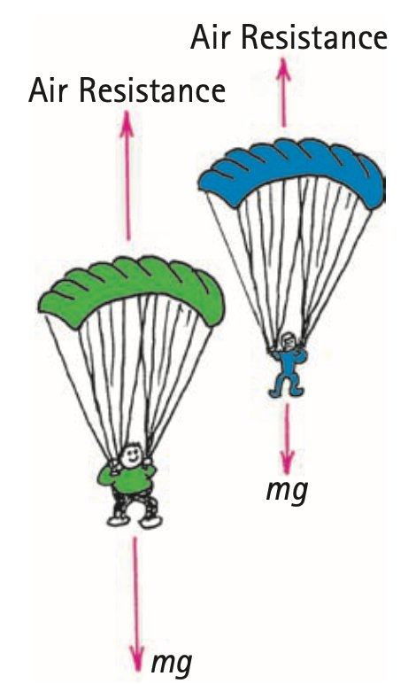
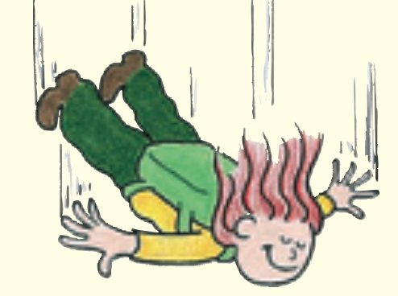

Free Fall and Nonfree Fall
Mathematical idea: A falling object accelerates according to the net force divided by its mass; air resistance can reduce that net force to zero.
You will compare free fall with falling through air and use source diagrams to track how gravity, air resistance, and terminal speed fit together.
Learning Target
Students will distinguish free fall from nonfree fall and explain how air resistance affects falling motion.
I can statements
- I can explain that free fall means gravity is the only significant force acting.
- I can explain why objects in free fall accelerate at $g$ when air resistance is ignored.
- I can explain why falling through air can produce acceleration less than $g$.
- I can describe terminal speed as constant speed reached when air resistance balances weight.
- I can compare falling objects with different amounts of air resistance.
Vocabulary
These are words you will see in this section. Do not define them yet.
- free fall
- gravity
- g
- air resistance
- net force
- nonfree fall
- terminal speed
- frontal area
Use the preview activity to decide which words you already know, recognize, or do not know yet. Watch for these words in bold when they are first introduced or defined in the reading.
Preview: Skim Before You Read
Directions
Before reading closely, skim the vocabulary list and the section. Look at titles, headings, bold words, pictures, captions, diagrams, tables, and formulas. Do not try to understand everything yet. Your job is to notice what already looks familiar and make predictions about what this section may explain.
Step 1 — Sort the vocabulary. Write each vocabulary word in the column that best matches what you know right now. You may move a word later.
| Know for sure | Recognize | Don’t know yet |
|---|---|---|
Step 2 — Skim the section. Record what catches your attention before you read closely.
| What I noticed | |
|---|---|
| What I predict | |
| What I wonder |
Content: Read, Look, Annotate, Apply
Directions
Read in short chunks. Annotate the prose and the figures together: underline evidence, circle or highlight bold vocabulary, label arrows or measured features, connect a sentence to an image, and write short questions or connections in the margins.
Reading 1: Free Fall Is a Force Condition
An object is in free fall when gravity is the only significant force acting. Free fall does not mean “falling fast” or “falling in a vacuum only”; a vacuum is simply a condition that removes air resistance and makes the free-fall model especially clear.
Near Earth, the acceleration produced by gravity alone is represented by g. The source explains a result that can seem surprising: objects with different masses have the same free-fall acceleration when air resistance is ignored.

Image read: Compare the mass and force labels. Annotate why doubling both force and mass leaves the force-to-mass ratio unchanged.
A heavier object has a larger gravitational force on it, but it also has proportionally more mass resisting acceleration. Those two changes offset, so the force-to-mass ratio stays the same at the same location.

Image read: Focus on the force-to-mass comparison. Explain why equal acceleration does not require equal gravitational force.
Stop and Discuss
- Why do a heavy object and a light object have the same free-fall acceleration even though their weights are different?
- A student says, “If two objects accelerate at the same rate, the same force must act on both.” Use the source figures to evaluate the claim.
Teacher answer: In free fall, gravity is the only significant force. The heavier package has more gravitational force but also proportionally more mass, so the force-to-mass ratio and acceleration are the same.
Example 1: Coin and feather in vacuum
A coin and a feather are dropped side by side in a vacuum near Earth.
- Compare their free-fall accelerations.
- Compare the gravitational forces on them and explain why equal acceleration does not mean equal weight.
Teacher answer: A coin and feather in vacuum have different weights but the same free-fall acceleration because each has the same force-to-mass ratio at the same location.
You Try It 1: Different masses, same g
A 1-kg object and a 5-kg object are released in a vacuum at the same place.
- Compare their accelerations.
- Use Newton’s Second Law reasoning to explain the result.
Teacher answer: The claim “same acceleration means same force” is false. Equal acceleration can come from different forces acting on proportionally different masses.
Reading 2: Air Resistance Reduces the Downward Net Force
Real falling objects often experience air resistance in addition to weight. Because air resistance acts upward on a downward-moving object, the net force is smaller than weight alone.

Image read: If the downward arrow is larger than the upward arrow, draw the direction of net force and acceleration.
Falling with significant air resistance is nonfree fall because gravity is not the only important force. Newton’s laws still apply: acceleration is determined by net force divided by mass. The acceleration is less than $g$ whenever the upward air-resistance force reduces the downward net force.
Air resistance depends on speed and on how much air the object must push aside. As a falling object speeds up, air resistance generally increases. That means the downward net force can shrink during the fall even though weight stays nearly constant.

Image read: Compare the forces required for each parachutist to reach balance. Why might the heavier person need a greater falling speed before air resistance matches weight?
Stop and Discuss
- Why is acceleration less than $g$ when air resistance is significant?
- As a skydiver speeds up before terminal speed, what happens to air resistance, net force, and acceleration?
Teacher answer: Air resistance acts upward while weight acts downward. The net downward force is smaller than weight alone, so the falling acceleration is less than $g$.
Use downward as the positive comparison direction in this simple one-dimensional model. If $W\gt F_{air}$, net force and acceleration are downward. If $W=F_{air}$, net force and acceleration are zero.
Example 2: Still accelerating downward
A falling object has weight 70 N downward and air resistance 25 N upward.
- Calculate the net force, including direction.
- Is the object still accelerating? Explain.
Teacher answer: $F_{net}=70-25=45\text{ N}$ downward. The object is still accelerating downward because the net force is not zero.
You Try It 2: Forces approach balance
The same object is falling faster later, and air resistance has grown to 60 N while weight remains 70 N.
- Find the new net force.
- Compare the new acceleration qualitatively with the earlier acceleration.
Teacher answer: If air resistance grows to 70 N while weight stays 70 N, net force becomes zero and acceleration becomes zero; the object can still be moving downward at constant speed.
Reading 3: Terminal Speed Means Balanced Forces
If air resistance grows until it equals weight, net force becomes zero and acceleration stops. The object has reached terminal speed: it continues falling at constant speed rather than stopping.
Air resistance at a given speed also depends on frontal area, the effective area facing the airflow. A skydiver can spread out to increase area and air resistance or streamline the body to reduce area and reach a higher terminal speed.

Image read: Outline the broad area facing the airflow. Predict how changing to a head-first position would affect air resistance at the same speed.
Parachutes create a very large frontal area, allowing air resistance to balance weight at a much lower speed. The source comparison of two parachutists also shows why equal parachute size does not guarantee equal terminal speed: a heavier person has a larger weight to balance.
The central idea is always net force. Gravity does not turn off at terminal speed. Instead, gravity downward and air resistance upward are equal in magnitude, so acceleration is zero while velocity remains constant downward.
Stop and Discuss
- Why does a skydiver keep moving downward at terminal speed even though acceleration is zero?
- How can body position change terminal speed without changing the skydiver’s mass?
Teacher answer: Air resistance increases with speed and depends on frontal area. As it grows, downward net force and acceleration decrease.
Example 3: At terminal speed
A skydiver’s weight is 800 N downward and air resistance has increased to 800 N upward.
- Find the net force and acceleration.
- Describe the skydiver’s velocity if terminal speed has been reached.
Teacher answer: At terminal speed, air resistance equals weight. Gravity has not stopped; the forces balance, so speed is constant rather than zero.
You Try It 3: Same parachute, different weight
Two parachutists use same-size parachutes. One has greater weight.
- At the same falling speed, compare the air resistance if their areas and shapes are similar.
- Explain why the heavier parachutist must generally fall faster before reaching terminal speed.
Teacher answer: With equal parachute area, the heavier person generally needs a higher speed before air resistance grows enough to match the larger weight, so the heavier person can have greater terminal speed.
Vocabulary: Define the Terms
You have now seen these words in the reading, images, and practice. Use this table to consolidate the physics meaning of each term.
| Vocabulary term | Definition |
|---|---|
| free fall | Motion in which gravity is the only significant force acting on an object. |
| gravity | The attractive interaction between masses; near Earth it produces an object’s weight. |
| g | The acceleration due to gravity when gravity is the only significant force; near Earth it is about $10\text{ m/s}^2$. |
| air resistance | An upward resistive force on a falling object moving through air. |
| net force | The combined force that determines an object’s acceleration. |
| nonfree fall | Falling motion in which a force such as air resistance is significant in addition to gravity. |
| terminal speed | A constant falling speed reached when air resistance balances weight so net force and acceleration are zero. |
| frontal area | The effective area that pushes through the air; larger frontal area generally produces more air resistance at the same speed. |
Summary
- Free fall means gravity is the only significant force acting.
- Objects of different mass have the same free-fall acceleration at the same location because gravitational force and mass increase in the same ratio.
- Air resistance reduces the downward net force, so nonfree-fall acceleration can be less than $g$.
- $F_{net}=W-F_{air}$ models simple downward falling with upward air resistance.
- At terminal speed, air resistance equals weight, net force and acceleration are zero, and the object continues downward at constant speed.
Teaching note: Require the distinction between zero acceleration and zero velocity. Terminal speed means constant nonzero downward velocity with balanced forces.
Common Mistakes
| Mistake | Why it is tempting | Check instead |
|---|---|---|
| Heavier objects fall faster in free fall. | Heavier objects do have greater weight. | They also have proportionally greater mass, so the force-to-mass ratio gives the same $g$ when air resistance is ignored. |
| Terminal speed means gravity stops acting. | Acceleration is zero at terminal speed. | Gravity still acts; air resistance balances it. |
| Zero acceleration means zero velocity. | Stopping and zero acceleration are easily confused. | Zero acceleration means velocity is constant, which may be nonzero. |
| Air resistance is constant. | Weight is nearly constant near Earth. | Air resistance generally grows with speed and depends on frontal area. |
What force condition defines free fall?
A falling object has weight 100 N and air resistance 70 N. Find the net force and explain whether its acceleration is less than, equal to, or greater than $g$.
What is one thing you learned in this section? Explain it in at least one complete sentence.
What is one thing from this section you still need to understand or practice more? Be specific.